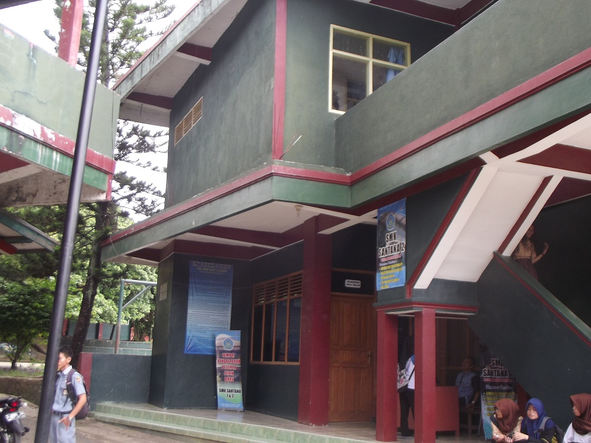
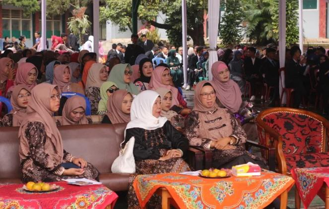

Selamat Datang di Website Resmi SMK Santana 2 Cibatu. Tempat mendidik generasi muda menjadi tenaga profesional, berkarakter, dan siap kerja.
Mulai JelajahiSMK Santana 2 Cibatu merupakan salah satu sekolah menengah kejuruan swasta unggulan yang berlokasi di wilayah strategis Kecamatan Cibatu, Kabupaten Garut. Kami berkomitmen untuk menyelenggarakan pendidikan vokasi yang relevan dengan tuntutan dunia kerja dan perkembangan teknologi terkini.
Melalui kurikulum berbasis industri, tenaga pendidik yang kompeten, serta fasilitas penunjang praktik yang memadai, kami berfokus membentuk lulusan yang siap bersaing secara global sekaligus memiliki integritas karakter yang kuat (akhlakul karimah).

Fokus pembelajaran pada administrasi server, instalasi jaringan internet, keamanan siber, serta perakitan perangkat keras komputer.
Melatih manajemen administrasi perkantoran modern, korespondensi bisnis, kearsipan digital, dan pelayanan prima (*excellent service*).
